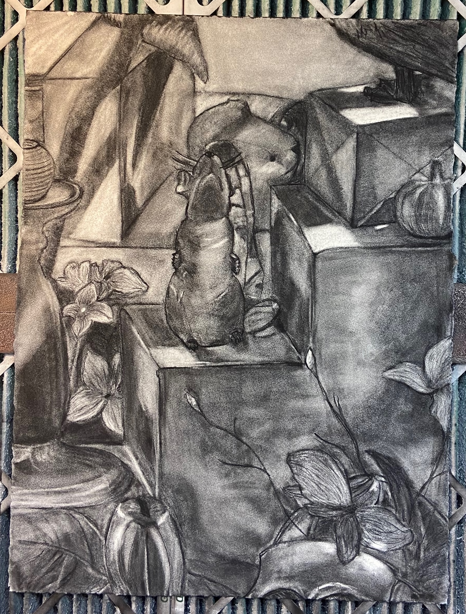
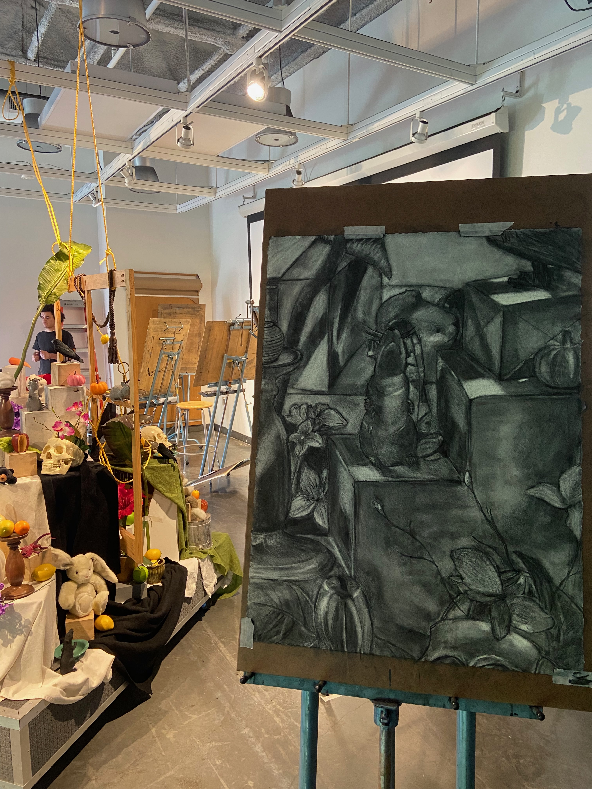

Large form charcoal drawing of a dense still life. I began working redactively, starting with a dark page by covering my page evenly in loose charcoal and then used a rubber eraser to pull out the highlights.

